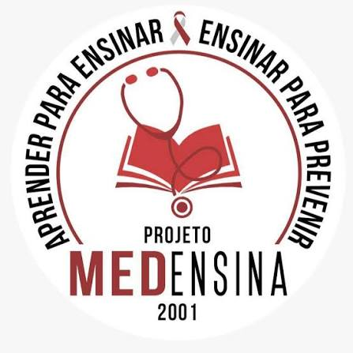

O Projeto MEDensina promove ações de educação em saúde, levando conhecimentos científicos à comunidade de forma clara e acessível. O objetivo é contribuir para a prevenção de doenças e a promoção da saúde, ajudando as pessoas a compreender melhor sua saúde e a tomar decisões mais conscientes sobre seu bem-estar.
Entre os principais temas abordados nas palestras estão:As palestras são realizadas em diferentes locais da comunidade, como escolas, associações e centros comunitários. O objetivo é tornar a educação em saúde mais próxima da realidade das pessoas, permitindo que elas tenham acesso a informações importantes para cuidar melhor de sua saúde.
As palestras são uma das principais formas de atuação do MEDensina. Por meio delas, os integrantes do projeto compartilham conhecimentos e conversam com a população sobre diferentes assuntos relacionados à saúde.Para o MEDensina, educação em saúde não significa apenas transmitir informações. É também uma oportunidade de **conversar, tirar dúvidas e compartilhar conhecimentos**, contribuindo para que cada pessoa possa cuidar melhor de si, de sua família e de sua comunidade.
Além de contribuir com a comunidade, o MEDensina também oferece aos seus integrantes oportunidades de aprendizado e desenvolvimento. Os alunos participam de reuniões semanais para discussão dos temas das palestras e de treinamentos internos, preparando-se para atuar nas atividades do projeto. A participação também proporciona formações complementares, como o Curso de Suporte Básico de Vida (SBV) realizado pela Cruz Vermelha Brasileira — Amazonas. Ao todo, o projeto oferece 576 horas complementares ou 4 créditos aos seus participantes.
O trabalho do MEDensina vai além das palestras de educação em saúde. O projeto também participa de atividades e ações sociais voltadas à comunidade. Entre elas estão:
As atividades ampliam a atuação do projeto e fortalecem sua relação com a comunidade.
No MEDensina, os estudantes têm a oportunidade de aprofundar seus conhecimentos, desenvolver sua capacidade de comunicação e compartilhar o que aprenderam com a população. Dessa forma, o projeto une formação acadêmica, educação em saúde e atuação social, criando uma experiência em que o conhecimento é utilizado para contribuir com a comunidade.